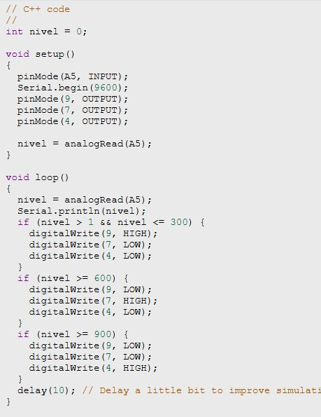

Ligação Eletrônica do Arduíno no Tinkercad
 ADAPTADO DE: Tikercard
ADAPTADO DE: Tikercard
Foto da Ligação Física no Protoboard.

Código C++ dos Níveis de Iluminamento com Leds e Display de 7 Segmentos.
Código Display de 7 Segmentos.


Código com Leds.

Vídeo do sistema físico funcionando no arduíno dos níveis de iluminamento com leds e display de 7 segmentos.
Print do Gráfico no Arduíno.